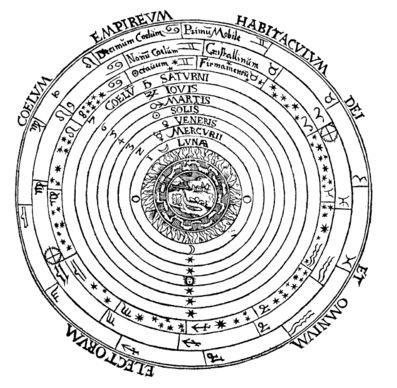
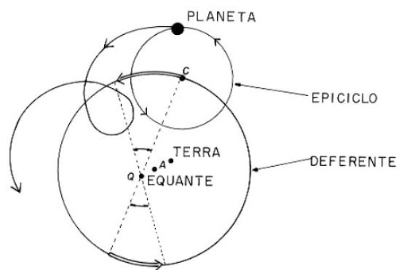
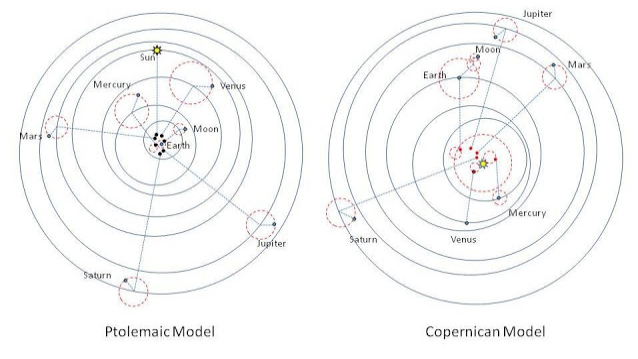
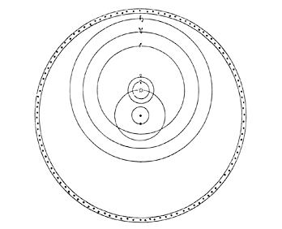
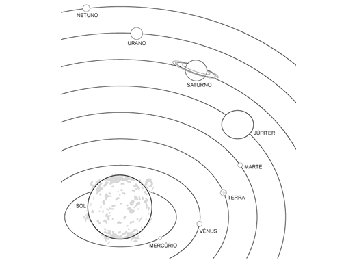

|
Personagem |
Principais realizações |
|---|---|
|
Pitágoras (★ 570 — 495 a.C. ✝) |
→ Defendeu a esfericidade da Terra. |
|
Aristóteles (★ 384 — 322 a.C. ✝) |
→ Propôs um modelo cosmológico. |
|
Aristárco de Samos (★ Séc. III — séc. II 322 a.C. ✝) |
→ Propôs um sistema planetários heliocêntrico; → Calculou as distâncias relativas entre Sol, Terra e lua. |
|
Eratóstenes de Cirene (★ 276 — 194 a.C. ✝) |
→ Calculou o diâmetro do planeta Terra. |
|
Cláudio Ptolomeu (★ 100 — 180 ✝) |
→ Propôs um novo sitema planetário (ptolomáico). |
|
Nicolau Copérnico (★ 1473 — 1543 ✝) |
→ Propôs um novo sistema planetário (copernicano); |
|
Tycho Brahe (★ 1546 — 1601 ✝) |
→ Coletou dados astronômicos notáveis; → Propôs um novo sistema planetário (híbrido). |
|
Galileu Galilei (★ 1564 — 1642 ✝) |
→ Introduziu o telescópio na atronomia; → Descobriu novos corpos celestes. |
|
Johannes Kepler (★ 1571 — 1630 ✝) |
→ Descobriu três novas leis físicas; → Propôs um novo sistema planetário (kepleriano). |
|
Isaac Newton (★ 1642 — 1727 ✝) |
→ Inventou um novo modelo de telescóbio (refletor); → Descobriu a lei da gravitação universal. |

Segundo o estagirita, o universo era esférico e tudo o que nele existia era composto a partir da combinação de 5 elementos, que serão aqui elencados em ordem crescente de peso: Terra, água, ar, fogo e éter (ou quintessencia); O centro do universo era o lugar natural do elemento mais pesado, logo, tudo que era composto por terra, deveria precipitar em linha reta em direção ao centro do universo, em direção ao planeta terra. Acima do planeta terra seria o lugar natural do segundo elemento mais pesado, a água; depois viria o ar e, em seguida, o fogo. Estes quatro elementos tomariam conta da composição do universo até a órbita lunar. Da lua pra cima, tudo seria composto de uma quintessência, dum éter. O sol e os planetas notoriamente, segundo Aristóteles, não se movem no universo como os corpos terrestre, que se movem em linha reta e precipitam com maior ímpeto quanto maior for o seu peso; os corpos celestes se movem alheios a esta regra, movem-se em circunferências concêntricas ao planeta terra.
|
CORPOS TERRESTRES SÃO CARACTERIZADOS POR: ◦ Movimento descontínuo; ◦ Movimento linear; ◦ Formas irregulares; ◦ Corruptibilidade. |
CORPOS CELESTES SÃO CARACTERIZADOS POR: ◦ Movimento contínuo; ◦ Movimento círcular; ◦ Formas perfeitas (esféricas); ◦ Incorruptibilidade |

No modelo aristotélico, os astros percorriam órbitas circulares e centradas no planeta terra. Entretanto, observações astronômicas depunham contra a proposta estagirita, pois constatava-se que haviam corpos celestes que executavam movimentos que não poderiam ser circulares, que movimentavam-se, na verdade, em rotas não unidirecionais, nem mesmo eram os movimentos uniformes, e ainda as órbitas não pareciam ter planos orbitais bem definidos. No século I, o astrônomo Ptolomeu propôs um novo modelo que resolvia este aparente problema. Neste modelo, os astros executavam uma órbita circular, uniforme e unidirecional, mas esta órbita era, na verdade, uma composição de círculos (Um modelo não muito simples, convenhamos). Veja o esquema abaixo.
O modelo cosmológico de Ptolomeu reinou soberano por mais de 1300 anos, até que, no século XVI, Nicolau Copérnico propôs um novo modelo, desta vez, heliocêntrico. O modelo Copernicano colocava o sol no centro do universo, e os demais astros celestes, incluindo a terra, o orbitavam em órbitas similares as órbitas propostas por Ptolomeu.

Obs.: Observe que no modelo copernicano, o deferente ora está centrado num ponto ora num epiciclo. Perceba também que a lua percorre o deferente em um epiciclo dentro de um epiciclo. Ao se analisar isto, pode-se inferir que o sistema proposto por Copérnico é tão complexo quanto o sistema ptolomaico.

Tycho Brahe foi, possivelmente, o astrônomo mais habilidoso da era pre-telescópica da ciência. Tycho também propôs um sistema cosmológico. Ele aceitava a ideia de que os planetas orbitavam o sol, mas era refratário à ideia de que a terra o orbitava, pois, para ele, a terra estava estática no centro do universo. O modelo que ele propôs mesclava o modelo de Ptolomeu (com a terra estática no centro do universo) com o sistema de Copérnico (com o sol no centro das órbitas planetárias).

Kepler trabalhou com Tycho Brahe durante muitos anos e legou dele muitos dados astronômicos. O cientista alemão munido destes dados formulou um novo sistema planetário, o compilou em 4 leis físicas que apresentou ao mundo, sendo que uma delas estava incorreta, as outras três, nós a estudamos até hoje. O modelo kepleriano põe o sol no centro do universo e, ao redor dele, orbitam os planetas em órbitas elípticas e em movimento variado.